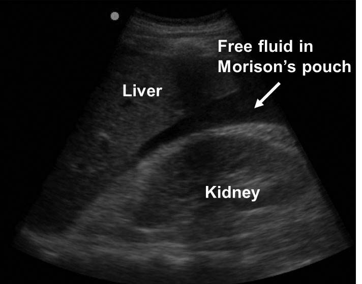
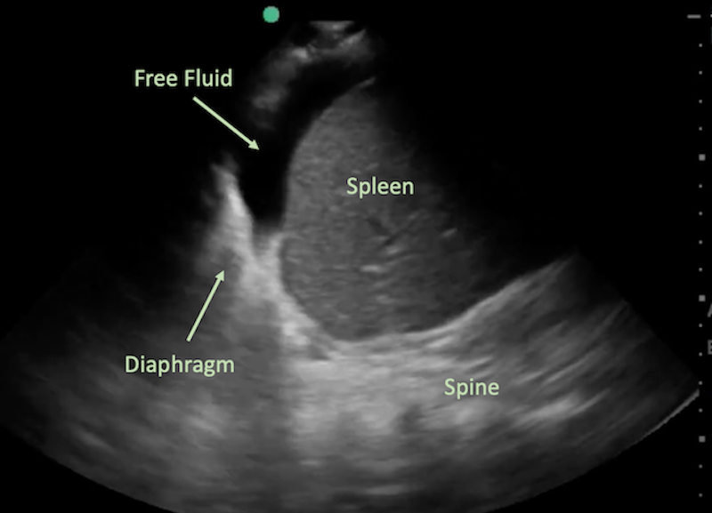
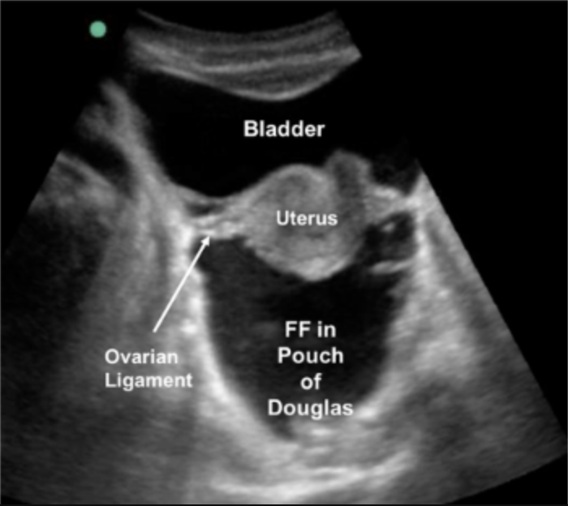

| # | View | Probe | Position | Looking For |
|---|---|---|---|---|
| 1 | RUQ / Morrison’s Pouch | Curvilinear | Right midaxillary line, 8th–11th ICS, marker cephalad | Free fluid between liver and right kidney. Right pleural effusion/hemothorax above diaphragm. |
| 2 | LUQ / Perisplenic | Curvilinear | Left posterior axillary line, 8th–11th ICS, marker cephalad. More posterior than RUQ. | Free fluid most commonly collects in the perisplenic space, not at the splenorenal interface itself.8 Left pleural effusion above diaphragm. |
| 3 | Pelvic / Pouch of Douglas | Curvilinear | Transverse and sagittal above pubic symphysis | Free fluid posterior to bladder. Gravity-dependent collection in supine patient. |
| 4 | Pericardial (Subxiphoid) | Phased array or Curvilinear | Subxiphoid, liver as window, marker left | Pericardial effusion. Cardiac activity in PEA/arrest. |
| 5 | Bilateral Anterior Lung | Linear preferred | 2nd–3rd ICS, MCL bilaterally, marker cephalad | Lung sliding (PTX absent if present). Right: also assess for hemothorax above diaphragm. |
The splenorenal ligament anchors the spleen to the kidney and physically prevents fluid from pooling at that interface unless the ligament itself has been disrupted. In practice, free fluid in the LUQ is found around the spleen (perisplenic, including the subphrenic space superior to the spleen) well before it appears between the spleen and kidney. Scan the entire perisplenic region, not just the splenorenal angle, to avoid a false negative.8
Penetrating thoracic trauma: start with pericardial. Blunt unstable: start with RUQ (highest sensitivity for hemoperitoneum). Suspected tension PTX: bilateral lung sliding first. Adapt to mechanism and vital signs.



| Finding | Interpretation | Action |
|---|---|---|
| Free fluid + hemodynamic instability | Intra-abdominal hemorrhage until proven otherwise | Direct to OR for damage control surgery. No CT needed. |
| Free fluid + hemodynamically stable | Hemorrhage possible; may be minor or contained | CT abdomen/pelvis with contrast. Surgical/IR consultation. |
| Pericardial effusion + tamponade signs | Hemopericardium / tamponade | Penetrating: OR. Blunt: pericardiocentesis as bridge, then OR. |
| Absent sliding + absent B-lines + instability | Tension PTX until proven otherwise | Needle decompression / finger thoracostomy. Do not wait for imaging. |
| Anechoic fluid above diaphragm | Hemothorax or pleural effusion | Chest tube. In trauma context: hemothorax. |
| Negative eFAST + hemodynamically unstable | Intra-abdominal source not excluded (~80% sensitivity). Consider retroperitoneal, pelvic fracture, neurogenic, tension PTX missed. | Reassess, serial exam, CT if stable. DPL if not. |
Retroperitoneal hematoma, hollow viscus injury, diaphragm rupture, mesenteric injury, and spinal cord injury all produce instability without positive eFAST. Sensitivity for all injuries is ~80%. A negative result with ongoing instability demands further evaluation.